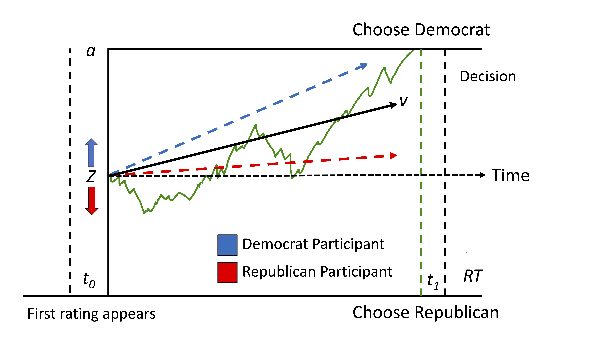

Computational Mechanisms Underlying Politically Motivated Reasoning
Decomposing the influence of prior beliefs and evidence accumulation
Published in Cognition CodeResearch Question
Despite unprecedented access to information, partisans increasingly disagree about basic facts that are backed by data, posing a serious threat to a democracy that relies on finding common ground based on objective truths. What explains such fundamental disagreements?
Competing Hypotheses
- Prior beliefs render pre-existing beliefs resistant to change
- Motivations bias how people process new information
Method
Participants
(N = 182) were recruited from CloudResearch. 58% of participants self-identified as Democrats
Personality Measures
- Cognitive Reflection (Omega = .65)
- Numeracy (Omega = .75)
- Need for Cognition (Omega = .89)
Procedure
On each trial (representing a different deidentified topic) participants saw Democrat (denoted in blue) and Republican (denoted in red) fact-check scores move across the screen and had to categorize as quickly and accurately as possible which candidate was more accurate. Fact-check scores were randomly drawn from two normal distributions based on which candidate happened to be more honest on that issue (randomized across trials). Participants were incentivized to be accurate and could make their guesses after seeing at least three fact-check scores. Note: In this example, the Republican candidate made more accurate statements.

Drift Diffusion Modeling
I used the HDDM toolbox in Python to conduct hierarchical Bayesian parameter estimation of the Drift Diffusion Model
Drift diffusion modeling decomposes decisions into (1) the starting point of evidence accumulation (z) – a free parameter estimating an a priori preference for one of the two outcomes, and (2) the drift rate (v) – a free parameter estimating the precision with which evidence is accumulated towards the two outcomes.

Results
Logistic Regression (left figure)
Participants required less evidence before correctly predicting that the ingroup candidate was more honest (yellow) compared to the outgroup candidate (purple). When the ingroup candidate was more honest, participant’s psychometric function was shifted left compared to when the outgroup candidate was more honest.
Drift Diffusion Results (right figure)
(A) Comparison of DIC difference from null model reveals that z & v model performed significantly better than all other models. (B & C) Density plots of participants individual posterior parameter estimates. The dashes line in panel B indicates the value of an unbiased parameter. (B) 99% of participants had a posterior drift rate that was positive, indicating that they weighted information that favored the ingroup candidate more than information that favored the outgroup candidate.
Discussion
We demonstrate that despite financial incentives for accuracy, social motivations internal to the individual bias information processing towards desired conclusions. Partisans required overall less and weaker evidence when correctly categorizing the ingroup as more honest compared to the outgroup, and were more accurate on trials when the ingroup candidate was more honest, compared to the outgroup. DDMs revealed that partisan biases jointly arise as a function of two distinct mechanisms. First, pre-existing preferences for believing the ingroup candidate was more honest prepared partisans to conclude that the ingroup was more honest, and therefore they needed less evidence to arrive at this conclusion (i.e., biased starting point). Second, partisans were more precise in accumulating evidence that favored the ingroup candidate compared to the outgroup, resulting in differential weighting of evidence that favored the ingroup (i.e., biased drift rate).